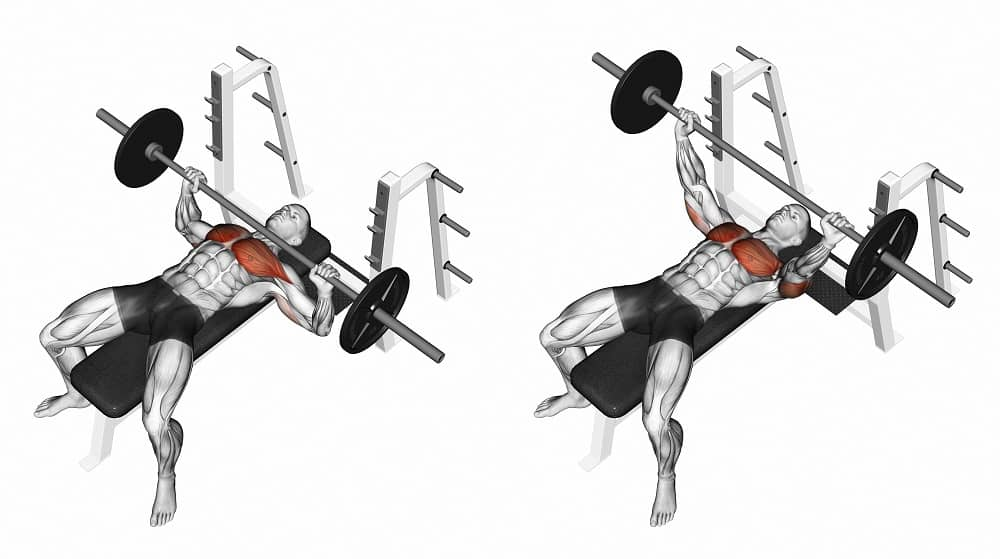
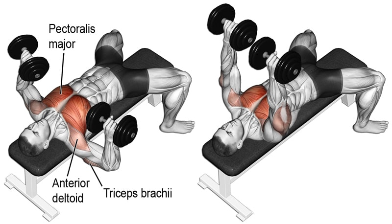
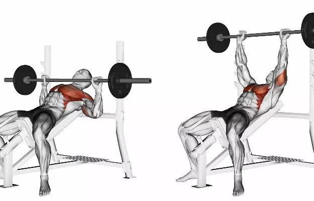
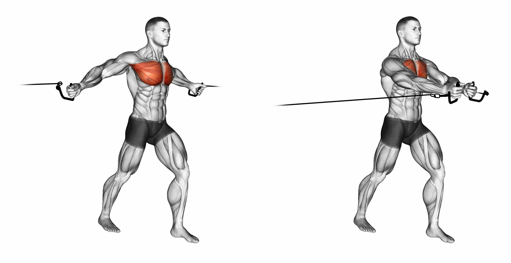

Bench Press
Step:1 lay on a flat bench and find the ideal grip (typically most people start with a pinky on the first ring of the bar)
Step:2 Drive the legs into the ground to create stability
Step:3 Engage your lats by rotating your elbows towards your hips
Step:4 Bring the bar down in a slow and controlled descent (try imagining the bar is loading like a spring)
Step:5 Press the bar up in a controlled manner
Dumbbell Bench Press
Step:1 Sitting on a bench place the dumbbells on top of your knees
Step:2 In one motion lean back to lay down on the bench while bringing the dumbbells up with your knees
Step:3 With the weights up in the air bring them down to a slow descent as to ensure your elbows are at a 45 degree angle
Step:4 Press the weight up while ensuring forearms remain vertical to the ground
Incline bench Press
Step:1 While laying on an incline bench you want your eyes to be aligned with the bottom of the bar
Step:2 On an incline bench you want to establish a solid foundation by driving your feet into the ground and pushing your knees out
Step:3 You will want to find the right placement for your hands so that your forearms are vertical through the movement
Step:4 Upon descending with the bar it is ideal to maintain your elbows at a 50-75 degree angle
Cable fly
Step:1 Place the cables height at chest level
Step:2 Grab onto the handles and two steps forward
Step:3 Slowly allow for the cables to stretch out your chest while maintaining a 18 degree bend on the elbow
Step:4 When bringing the handles to the starting position try to have your biceps touch (your biceps shouldn't touch but it is the best way to get good muscle activation)